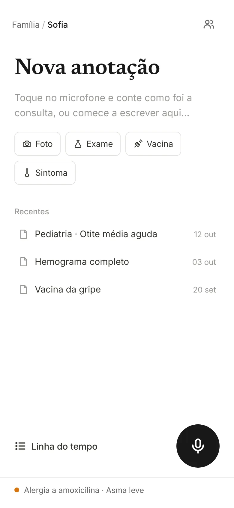
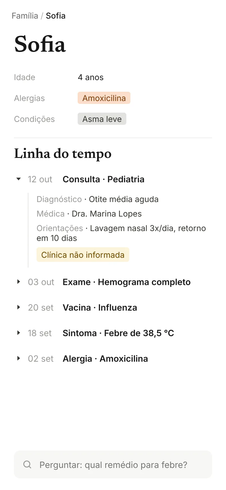
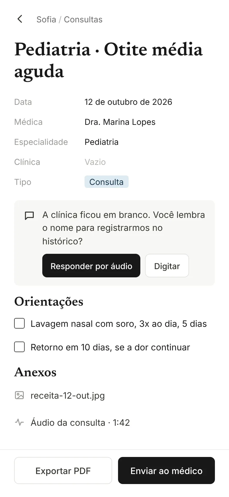

Orbita TechOpção E de 6
E
Blocos estilo Notion
Preto e branco, títulos com serifa e blocos que se expandem. Cada consulta vira uma página com propriedades.



Preto e branco, títulos com serifa e blocos que se expandem. Cada consulta vira uma página com propriedades.


